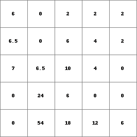
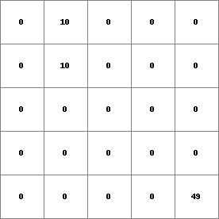
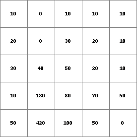
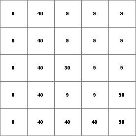
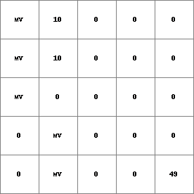
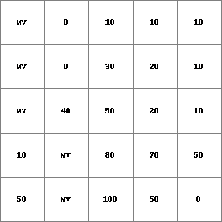
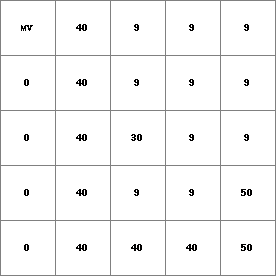

accutriggerflux, accutriggerstate¶
accutriggerflux, accutriggerstate
Input of material downstream over a local drain direction network when transport trigger is exceeded
Resultflux = accutriggerflux(ldd, material, transporttrigger)
Resultstate = accutriggerstate(ldd, material, transporttrigger)
Resultflux Resultstate = accutriggerflux, accutriggerstate(ldd, material, transporttrigger)
- ldd
- spatial ldd
- material
- spatial, non spatial scalar
- transporttrigger
- spatial, non spatial scalar
- Resultflux
- spatial scalar
- Resultstate
- spatial scalar
Operation¶
These operations describe accumulation of material in a drainage network with transport limited by a trigger: transport occurs once a trigger value has been exceeded. When the trigger value is not exceeded, no transport takes place and all material is stored. This may be the case with landslides, where the soil has to be saturated first before all water (and soil) will be transported downhill, or avalanches where the total amount of snow will come down once triggered.
Both operators perform the same function of accumulation of material with a transport trigger, the only difference between the operators is the sort of result that is saved: accutriggerstate yields storages of material in cells, accutriggerflux yields fluxes of material out of cells.
For each cell, the amount of material input, for instance the amount of rain, is given by material. This is transported in downstream direction through the consecutively neighbouring downstream cells, following the local drain directions on ldd. Each time material moves through a cell an certain amount is stored in the cell. These storages are saved as Resultstate, if the accutriggerstate operator is used. The remaining material is transported out of the cell, these amounts of outflow from each cell into its neighbouring downstream cell are the result of the accutriggerflux operator, they are saved as Resultflux.
The function can be described by flow of material through a set of linked systems, where a cell represents a system. The flow starts at the cells/systems at the watershed boundaries (defined by ldd) and ends at a pit cell. The systems are linked by the local drain directions on ldd, these define the path of flow through the set of cells/systems. Each time a system is passed, the amount of flow changes.
For a cell/system somewhere on the map, the flow of material is described by a system. The inflow of the cell is the sum of the outflow amounts of its upstream neighbours. This inflow amount is added to the material value in the cell itself. This amount of material is potentially available for transport out of the cell. If it is less than or equal to the transporttrigger value of the cell all material is stored. If it is more than the transporttrigger all material is transported and nothing is stored.
For each cell, the amount of material which is transported to its downstream neighbour (or out of the map if the cell is a pit cell) is saved as Resultflux (use the operator accutriggerflux); the amount of material which is stored to the cell is saved as Resultstate (use accutriggerstate)
Notes¶
The values on material and transporttrigger must be equal to or larger than zero.
A cell with missing value on material and/or transporttrigger is assigned a missing value on Resultflux or Resultstate. Additionally, all its downstream cells are assigned a missing value.
The local drain direction network on ldd must be sound.
Group¶
This operation belongs to the group of Neighbourhood operators; local drain directions
See Also¶
Examples¶
- • pcrcalcbindingState1 = State1.map;Flux1 = Flux1.map;Ldd = Ldd.map;Material = Material.map;initialreport State1, Flux1 = accutriggerstate,accutriggerflux(Ldd,Material,1.5);• pythonLdd = readmap(“Ldd.map”)Material = readmap(“Material.map”)State1=accutriggerstate(Ldd,Material,1.5)Flux1=accutriggerflux(Ldd,Material,1.5)
State1.map Flux1.map Ldd.map Material.map 
 

- • pcrcalcbindingState2 = State2.map;Flux2 = Flux2.map;Ldd = Ldd.map;Material = Material.map;TransTH = TransTH.map;initialreport State2, Flux2 = accutriggerstate,accutriggerflux(Ldd,Material,TransTH);• pythonLdd = readmap(“Ldd.map”)Material = readmap(“Material.map”)TransTH = readmap(“TransTH.map”)State2 = accutriggerstate(Ldd,Material,TransTH)Flux2 = accutriggerflux(Ldd,Material,TransTH)
State2.map Flux2.map Ldd.map Material.map TransTH.map  

 - • pcrcalcbindingState3 = State3.map;Flux3 = Flux3.map;Ldd = Ldd.map;Material = Material.map;TransTHMV = TransTHMV.map;initialreport State3, Flux3 = accutriggerstate,accutriggerflux(Ldd,Material,TransTHMV);• pythonLdd = readmap(“Ldd.map”)Material = readmap(“Material.map”)TransTHMV = readmap(“TransTHMV.map”)State3 = accutriggerstate(Ldd,Material,TransTHMV)Flux3 = accutriggerflux(Ldd,Material,TransTHMV)
State3.map Flux3.map Ldd.map Material.map TransTHMV.map  
